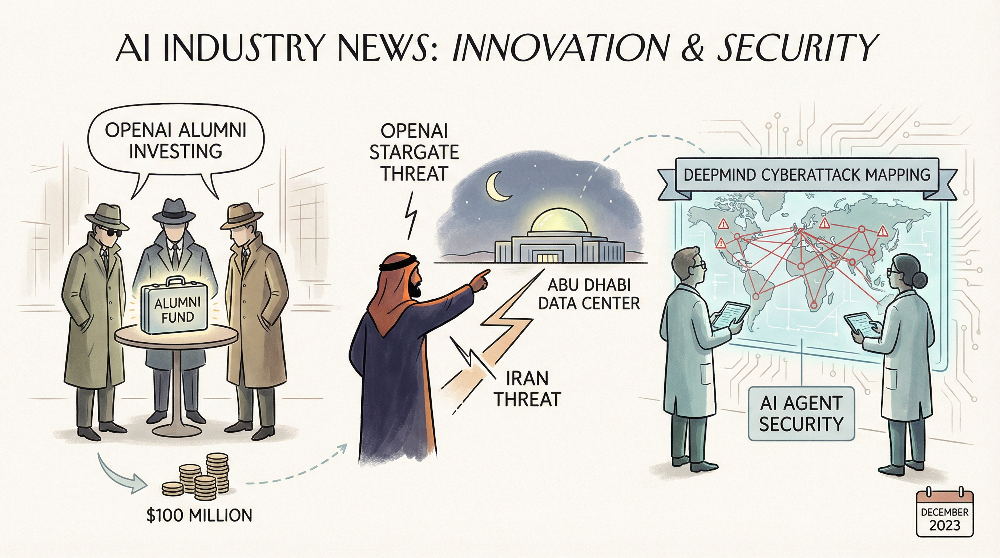

OpenAI前员工创立的Zero Shot风险投资基金，计划筹集1亿美元，已开始投资。
两克伴AIGC日报
2026-04-07 星期二

本期关注：OpenAI校友们正在悄然投资于一个新基金，该基金可能价值1亿美元。、伊朗威胁阿布扎比的OpenAI星门数据中心、谷歌DeepMind研究人员绘制针对人工智能代理的网络攻击图 - 安全周、OpenAI 呼吁调查马斯克，称其行为阻碍AGI研发并涉嫌不正当竞争
📰 行业动态
伊朗威胁攻击OpenAI在阿布扎比的Stargate数据中心。
Google DeepMind研究人员发现针对AI代理的Web攻击漏洞。
OpenAI呼吁调查马斯克，称其行为阻碍AGI研发并涉嫌不正当竞争。
OpenAI有望最早于第四季度进行IPO。
🔥 今日焦点
Agentic Control Plane（ACP）是由David Crowe创立的治理层，旨在为AI编码代理如Claude Code和OpenClaw提供监管。该系统源于去年David在连接应用程序与大型语言模型（LLM）时遇到的认证难题，揭示了在AI领域，用户认证的挑战仅是冰山一角。ACP的核心功能在于解决AI代理的认证、权限管理、限制设定和审计日志记录等下游治理问题。
这一解决方案的重要性在于，随着AI在软件开发等领域的广泛应用，确保AI代理的合规性和安全性变得尤为关键。ACP通过在AI编码代理前设置治理层，为AI应用提供了强有力的保障，有助于防止潜在的安全风险和数据泄露。
Next Moca，一家专注于AI代理控制平面的初创公司，近日宣布完成10M美元的pre-seed轮融资。Next Moca致力于打造一个高效、可扩展的AI代理控制平台，旨在简化AI代理的开发和部署过程。
在当前AI领域，随着AI代理在各个行业的应用日益广泛，如何高效地管理和控制这些代理成为一大挑战。Next Moca的出现，正是为了解决这一痛点。该平台通过提供一系列工具和功能，帮助开发者轻松构建、训练和部署AI代理，从而降低AI应用的门槛，加速AI技术的普及。
📚 深度长文
本文深入探讨了人工智能对就业市场的潜在影响，作者James O'Donnell以硅谷地区对AI引发的就业危机的普遍担忧为切入点，揭示了这一现象背后的复杂性和不确定性。文章核心观点在于，虽然AI技术正迅速发展，但其中一项关键数据却可能为我们揭示就业市场的真实面貌。作者通过分析多项关键论据，如AI在特定行业中的应用情况、人类与机器的协作模式等，为我们提供了独特的见解。阅读本文，AI从业者将能够更全面地理解AI技术对就业市场的潜在影响，并从中汲取有益的启示。文章深度剖析了AI与就业之间的微妙关系，为读者呈现了一场关于未来就业市场的思想盛宴。
---
本文深入探讨了大型语言模型（LLMs）如何处理信息，以及如何进行上下文工程。作者ByteByteGo首先阐述了LLMs的信息处理机制，揭示了其内部运作原理。接着，详细介绍了上下文工程的概念，并提出了多种策略以优化LLMs的上下文理解能力。文章的核心观点在于，通过上下文工程，可以有效提升LLMs在特定任务上的表现。文章的关键论据包括LLMs的内部处理机制、上下文工程的重要性以及实际应用中的具体策略。阅读本文，AI从业者将获得对LLMs工作原理的深入理解，并掌握提升模型性能的有效方法。文章深度和独特见解体现在对LLMs内部运作机制的剖析以及对上下文工程策略的全面阐述，为AI领域的研究和实践提供了宝贵的参考。
---
本文深入探讨了人工智能（AI）对经济的影响，提出了三个核心观点。首先，作者Jack Clark分析了网络战的规模定律，揭示了AI在网络安全领域的潜在变革力量。其次，文章探讨了AI自动化浪潮的兴起，指出AI在各个行业的广泛应用将带来巨大的经济效益。最后，作者对GDP预测的难题进行了深入剖析，提出AI在预测经济趋势方面存在挑战。
文章的关键论据包括：AI在网络安全领域的应用将改变传统防御模式，提高防御效率；AI自动化将推动产业升级，提升生产效率；AI在GDP预测方面的应用仍需解决算法和数据质量等问题。阅读本文，AI从业者可以了解到AI对经济的影响，以及如何应对AI带来的挑战和机遇。文章深度和独特见解体现在对AI与经济关系的全面分析，为行业提供了宝贵的参考。
🛠️ 产品推荐
Show HN: An agentic loop for time-series forecasting using sktime and MCP是一款基于sktime和MCP协议的开放源代码时间序列预测工具。该产品通过引入ReAct（推理+行动）循环，有效解决了将大型时间序列数据集直接输入LLM（大型语言模型）提示中的低效、昂贵和易产生幻觉的问题。通过MCP协议安全地代理数据到临时环境，提高了预测的准确性和效率，为用户提供了高效、可靠的时间序列预测解决方案。
---
CacheZero是一款基于Karpathy LLM知识库理念的NPM安装包。该产品将原始内容导入文件夹，由LLM编译成互联维基，并通过Obsidian进行搜索和查询。产品集成了Chrome扩展、Hono服务器、LanceDB向量搜索和Claude Code编译器，用户可轻松将书签整理成维基页面，实现高效的知识管理。CacheZero旨在解决知识整理和检索的难题，为技术从业者提供便捷的知识库构建与浏览体验。
---
Show HN: Hippo，是一款基于生物灵感的人工智能记忆系统。该系统通过模拟生物记忆机制，为AI代理提供高效记忆功能。Hippo能够帮助AI代理在处理复杂任务时，快速检索和利用已有知识，从而提高决策效率和准确性。该产品为AI领域研究者提供了一种创新的记忆解决方案，有助于提升AI智能水平，解决传统AI记忆能力不足的问题。